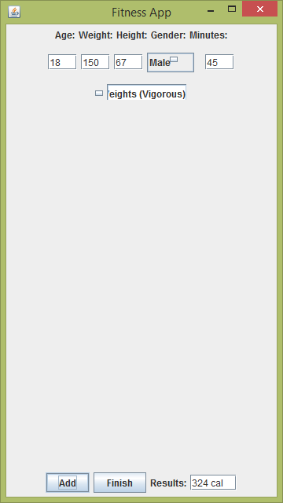
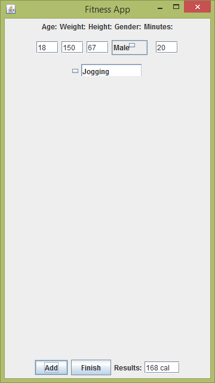
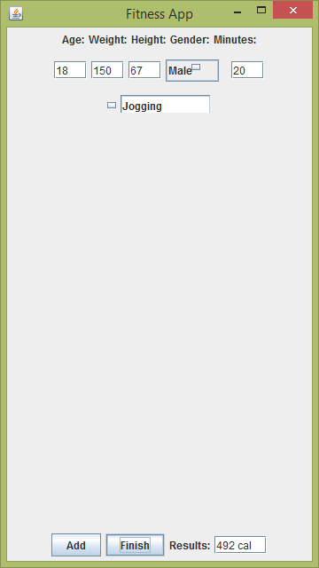
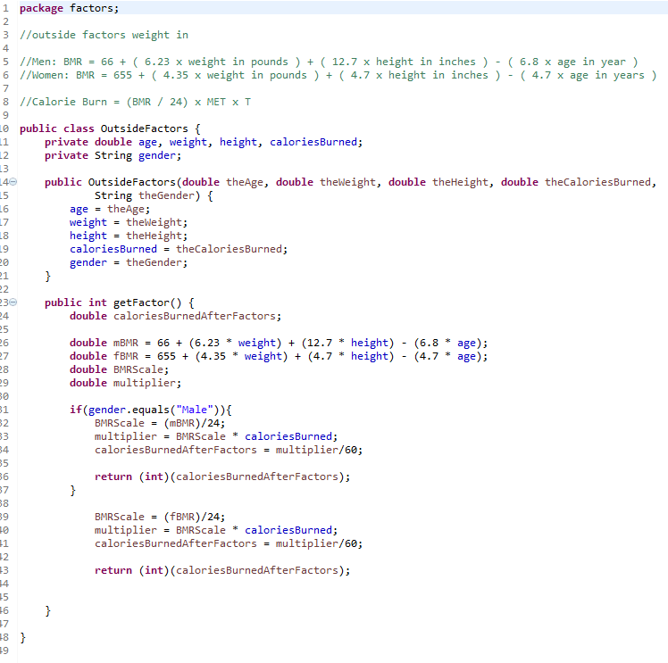
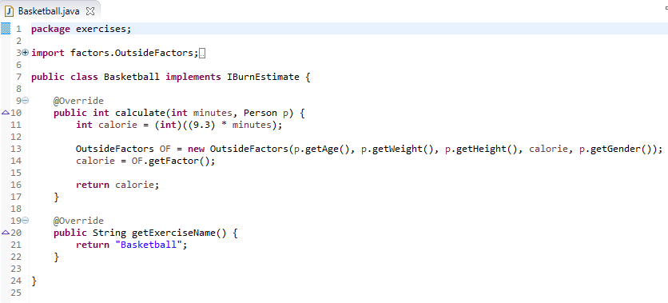
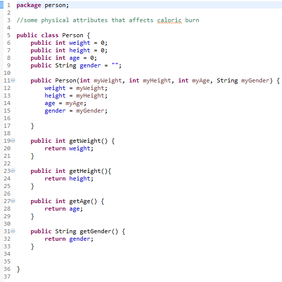
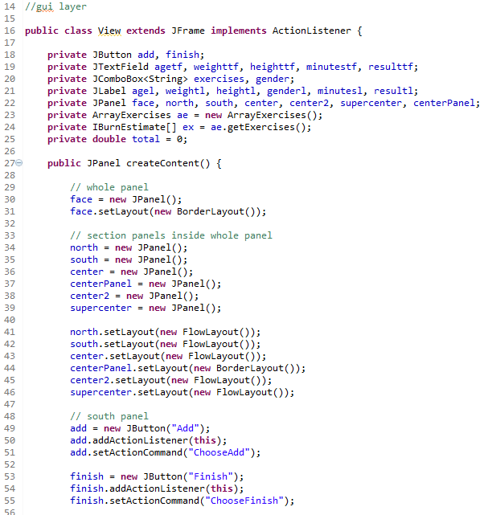
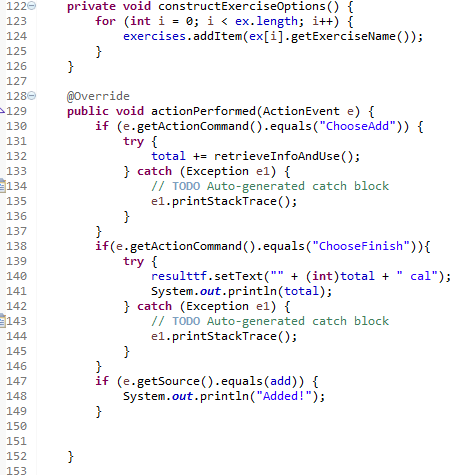
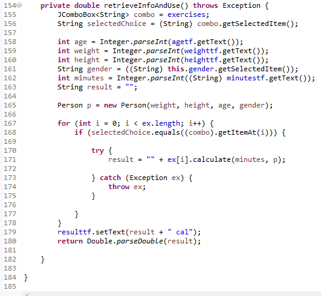

Here are some screenshots of my Java project: Fitness App
Here is a project I worked on during the last week of summer vacation before starting freshman year at Stony Brook. It is an application that retrieves some of the user's physical data (age, weight in lbs, height in inches, sex) as well as minutes of an exercise preformed and the exercise the user chooses from the combo box. In the screenshot shown above, the example user is an 18 year old, 5'7", 150 lbs male who has preformed 45 minutes of vigorous weight lifting.

Here the user can click on the "Add" button which will lead to the result text field displaying the number of calories burned for that particular exercise chosen, with the physical attributes and minutes preformed taken into consideration. As displayed above, the result is an expenditure of 324 calories.

The user may also wish to choose a different exercise and view the calories burned for it. In the example above, the user switches the exercise to "Jogging" and sets the number of minutes preformed to 20. Jogging for 20 minutes for the user burns 168 calories as the results shown above.

Finally, the user may wish to find out the total amount of calories burned. Simply click the "Finish" button and the program will add up the calories and display the final accumulated result. The total is 492 calories burned (324 + 168).

Here are the main algorithms used in this program. As you see, part of the whole calorie burner algorithm is based on a person's basal metabolic rate (BMR).
For males, the BMR formula is 66 + (6.23 x weight in lbs) + (12.7 x height in inches) - (6.8 x age in years).
For females, the BMR formula is 655 + (4.35 x weight in lbs) + (4.7 x height in inches) - (4.7 x age in years).
As stated in the fourth comment of the screen above, calorie burn is "BMR/24" multiplied by "MET" value multiplied by T. MET means "Metabolic Equivalent of Task" and T simply means time (in this case, we measure time using minutes). The purpose of dividing BMR by 24 on line 32 of the code is related to time (the rate of your basal metabolic rate by the hour). However, since we are going by minutes of exercise, I took it a step further and divided by 60 (now the rate of BMR is by the minute as desired). While the "BMR/24" (or rather (BMR/24)/60) part here is fully handled, the "MET x T" is represented by the "caloriesBurned" variable. The latter is described following the next screen.

In this screen, an exercise class is made to handle the MET * T portion of the calorie burning formula with its own unique MET value - Basketball with a MET value of 9.3. As you can see here, this MET value is then multipled by whatever minutes input by the user.

Here is the Person class which handles the construction of a Person object using the user's inputs.

A snippet of the GUI part of the code - Using border layout and flow layout to create the general design of the user interface.

Action listeners are created (for the Add and Finish buttons) and the construction of the combo box is created here.

Here data is parsed accordingly after being pulled from the text fields and then used to create the Person object (with the exception of "minutes" which is used in the "calculate" method along with the Person object p).